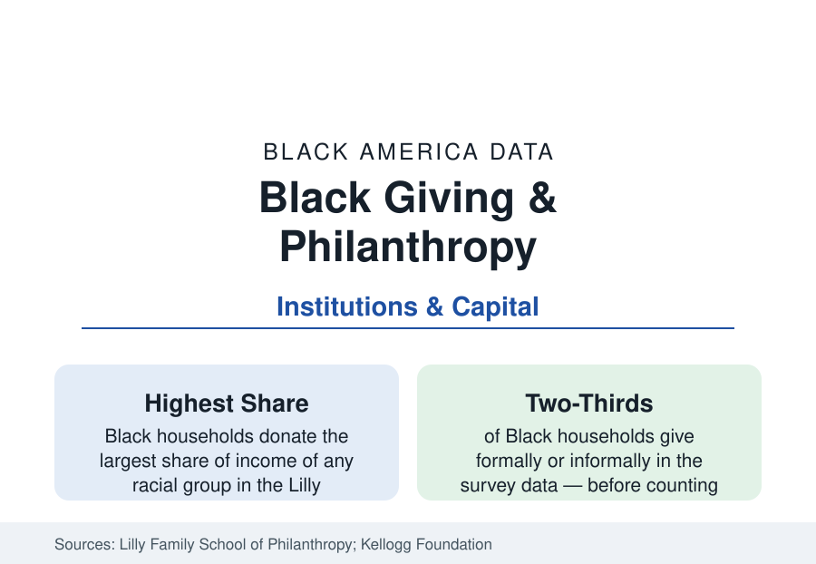

Black Business
Black Philanthropy: The Giving Data Behind the Institutions
Black households give a larger share of their income to charity than any other group in the giving studies — the quiet finances of Black America's institutions.

The philanthropy data hold a finding that inverts the wealth profile's usual direction: measured as a share of income, Black households are the most generous in America. The Lilly Family School of Philanthropy's long-running analyses find Black donors giving a larger fraction of their income than White donors at comparable levels, and the Kellogg Foundation's Cultures of Giving research values Black giving — formal and informal together — in the tens of billions annually. This article reports the giving data: where the money flows, what institutions it built, and how the formal foundation world compares.
The Flows: Church, Kin, Alma Mater, Community
Black giving's distribution is its signature. The church is the first channel — the religious-giving share of Black donations runs the highest of any group in the survey data, funding not only congregations but the church's role as the community's welfare institution of first resort (the benevolence funds, food programs, and emergency aid the congregation data describe). Kin and community giving — the informal economy of family support, remittances within the extended family, the collective pots of the mutual-aid tradition — is the channel formal surveys capture least and the Kellogg research values most: giving circles (now numbering in the hundreds nationally, their collective grants tracked by the giving-circle networks), fraternity and sorority foundations, the alumni channels to the HBCUs (whose advancement data record alumni giving rates and the mega-gifts of the current era), and the crowdfunding era's mutual-aid networks. The pattern is a philanthropy of proximity: the money moves through known hands to known needs, at velocities the foundation world's grant cycles do not attempt.
The Institutions It Built
The institutional record is the giving data compounded over a century: the Black church's building funds and colleges (nearly every HBCU began as a church-and-community subscription), the fraternal orders' hospitals and insurance companies, the United Negro College Fund (1944 — among the most successful federated campaigns in American philanthropy, its member schools' data in the HBCU profile), the local funds and federations, and the Black foundation sector proper (community-foundation funds, family foundations, corporate-giving programs) whose assets the foundation data place in the billions. The current era's headline gifts — the nine- and ten-figure commitments to HBCUs and Black institutions in the 2020s philanthropy data — landed on this infrastructure, and their stewardship is tracked in the recipient institutions' own reports as the sector's largest single test.
The Formal Sector's Other Side: Who Gets Funded, Who Leads
The foundation world's data cut the other way, and the sector's research records both edges. Funding to Black-led organizations runs below population share in the Candid and foundation analyses (the 'funding gap' reports place Black-led organizations' share of grant dollars in the single digits to low teens by methodology), with the unrestricted-funding share lower still — the trust-based philanthropy movement's case file. Leadership data complete the mirror: nonprofit CEOs are roughly one in ten Black in the BoardSource surveys, foundation presidents and program officers higher but below population share, and development-director ranks thinner — the professional philanthropy workforce replicating the credential professions' pattern. The Black-led community foundations and giving networks' growth — funds explicitly capitalizing Black-led organizations, the August's Black Philanthropy Month observance (founded 2011) coordinating the sector's calendar — are the current series' rising lines.
Wealth Transfer and the Next Ledger
The forward data are demographic: the great intergenerational wealth transfer the financial press prices in the tens of trillions will pass a Black share the wealth profile's distribution predicts (small at the top, broad in the middle), and the estate and planned-giving data — wills, beneficiary designations, the charitable bequests of the church generation — will decide how much of the giving tradition's capital formalizes into endowments. The donor-advised fund era's data already show Black donors adopting the instruments at rising rates in the Fidelity and community-foundation reports. The sector's own forecast, in its research journals, is continuity with scale: the highest-propensity givers in the data acquiring, for the first time, the asset base their giving rates always implied.
Reading the Giving Data
File this beside the wealth gap as its necessary correction: the population with the least wealth gives the largest share of its income, through institutions it built itself, at a scale the formal sector is only learning to count. Philanthropy's American story is usually told from the foundation down; the Black data tell it from the collection plate up — and the plate's arithmetic, compounded over a century, built colleges.
More in Black Business
Black-Owned Businesses: Counts, Receipts, and the Representation Gap
About 161,000 Black-owned employer firms and three million solo ventures: how the Census Bureau counts Black business ownership, where firms concentrate, and the gap between population share and business share.
Black Median Net Worth: The Wealth Gap in Federal Reserve Data
The Federal Reserve puts Black median family net worth at $44,900, against $285,000 for White families — about 16 cents on the dollar. The widest gap in economic data.
Black Buying Power: The $1.8 Trillion Consumer Economy
Black buying power is estimated at about $1.8 trillion — larger than the economy of most nations. What the figure measures, who produces it, and what it buys.
Source: Indiana University Lilly Family School of Philanthropy; W.K. Kellogg Foundation Cultures of Giving report; GivingTuesday and Fidelity Charitable data; BoardSource nonprofit leadership surveys.